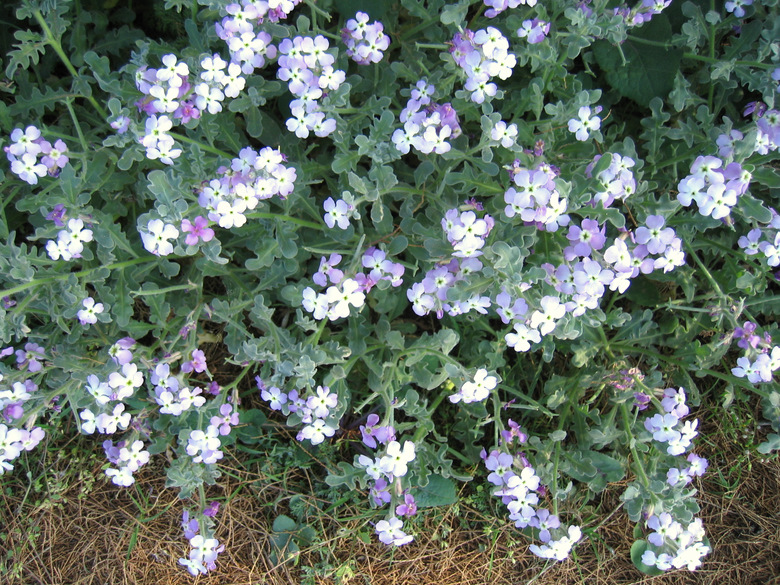
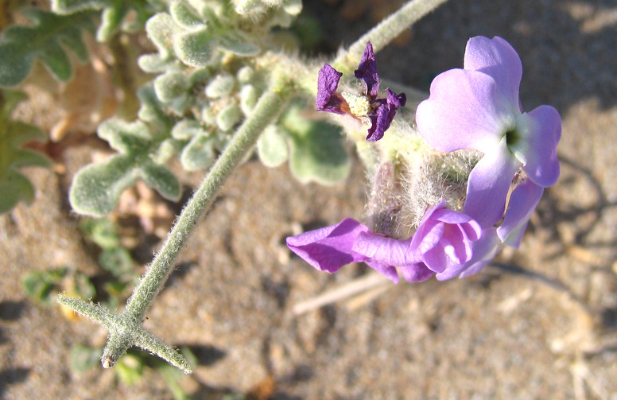
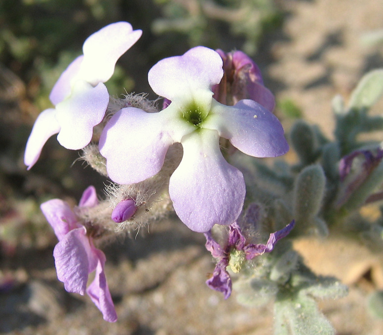

| PHRYGANA | Fauna | Flora | nouveautés | liste des espèces |
contact -
info - commentaires phrygana1 (at) gmail.com |
| Particularités crétoises | Galles et mines | ressources naturelles |
| Matthiola tricuspidata (L.) BR. |
| 37 | Flora | BRASSICACEAE BURNETT | Matthiola R. BR. |
 Matthiola tricupistata Giorgiopouli 09 avril 2006 |
| fr: la Matthiole à 3 pointes en: Three-horned stock | |
| Feuilles: pubescentes à très poilues (poils laineux), pennatifides, aux bouts arrondis. Tiges poilues. | |
| Plante vert grisâtre | |
| Fleurs: corolle rose pâle à violet franc, large de 12 à 15 mm. | |
| Fruit: une silique longue de 25 à 100 mm, avec un apex curieux à 3 pointes. | |
| Hauteur: 7 - 40 cm | Type biologique: thérophyte ramifié |
| Floraison: mars avril mai juin | |
| Altitudes: 0 - 50 m | |
| Statut en Crète: indigène | |
| Biotopes en Crète: rochers côtiers, dunes, vieux murs. | |
| Distribution: région méditerranéenne | |
|
 Matthiola tricupistata Giorgiopouli 09 avril 2006 |
 Matthiola tricupistata Giorgiopouli 09 avril 2006 |
| 08 février 2012 |
| © paul fontaine -- © Phrygana.eu 2007 -- 2013 |